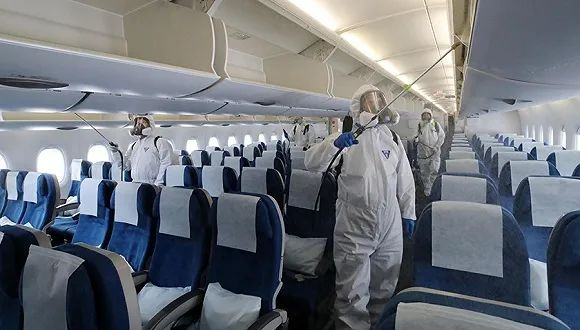

新冠疫情全球燎原
原文链接 备份链接 从1月13日中国境外出现首例新冠肺炎确诊病例，到2月末病毒登陆六个大洲，新冠疫情已经席卷了除南极洲外地球上的所有大洲。 截至3月2日，在中国以外，已有61个国家累计向世卫组织报告了8739例病例，其中已有127例死亡病 …

3月4日，大韩航空一架飞机正在消毒。图片来源：Yonhap
“
这将是韩国首次从特定国家、而不仅是国外个别地区撤侨。目前居留在伊朗的韩国公民共220人，预计约有100人将乘包机回国。
”
韩国中央防疫对策本部3月8日通报，截至当天零时，较昨日零时新增367例新冠病毒感染病例，较昨日下午4时新增93例，累计确诊7134例，死亡增至50例，治愈增至130例。
截至目前，除确诊患者外，韩国接受病毒检测的人数累计181384人，24小时新增9962人，有162008人的检测结果呈阴性，其余19376人的结果还未出炉。

来源：韩国中央防疫对策本部
在截至8日零时累计确诊的7134例病例中，分别有5378例和1081例出现在大邱和庆尚北道，占比75.4%和15.2%。京畿道和首尔市也分别确诊了142例和120例。
尽管单日新增的确诊病例数已在缓慢下降，但韩国目前的疫情形势依旧十分严峻。在截至7日零时确诊的6767例病例中，有72.8%与集体感染有关。与新天地教会相关的确诊病例共有4297人，占比63.5%，其中大部分来自大邱（3716人）和庆北（466人）。
目前，在韩国各地，尤其是疫情最为严重的大邱和周边地区，仍不断有集聚性感染情况和社区传播案例出现，卫生部门依然处于高度警戒状态。
7日，韩国政府已因大邱一栋公寓楼有46人确诊而首次采取了封楼措施。据了解，这栋公寓楼属于市政租赁公寓，主要面向35岁以下的未婚女性，共有137户，142名居民。卫生部门调查后发现，公寓住户中有94人为新天地信徒。
当天，大韩航空也出现了第二名确诊感染新冠病毒的乘务员。大韩航空及地方政府7日说，该乘务员现年36岁，上月底曾搭乘洛杉矶飞往仁川的航班。
大韩航空首名确诊感染的乘务员上月20日也曾在这趟从洛杉矶飞往仁川的KE012航班上执勤，该乘务员在上月25日确诊。大韩航空表示，同一趟航班上的其他乘务员的病毒检测均呈阴性，为预防起见，公司计划延长其他30名乘务员的隔离时间。
据韩国外交部7日消息，截至当天下午2时，因新冠肺炎疫情对韩国采取入境管制措施的国家和地区已增至103个。韩国政府则正在考虑下周安排包机从伊朗撤侨，这将是韩国首次从特定国家、而不仅是国外个别地区撤侨。
据了解，目前居留在伊朗的韩国公民共220人，预计约有100人将乘包机回国。他们将在回国后于定点设施接受病毒检测，并接受14天的隔离。
随着新冠肺炎疫情在国内持续蔓延，韩国餐饮与电影行业均受到了较大冲击。据韩联社报道，餐饮行业首当其冲，顾客减幅逼近六成；电影行业方面，观影人数已创下16年来最低水平，仍有50多部作品尚未敲定具体上线日期。
韩国餐饮业中央会下属韩国餐饮业研究院6日表示，2月25日至28日携手农林畜产食品部对600家餐馆进行上门和电话调查的结果显示，用餐顾客累计减幅高达59.2%。与前一周调查结果（32.7%）相比，顾客减幅仅一周就增加了26.5个百分点。
95.2%的受访餐馆表示，自1月20日国内出现首例确诊患者以来顾客逐渐减少。从各地区来看，确诊病例较多的庆尚北道、庆尚南道减幅最高，为66.8%。其后是江原道（65.9%）、忠清南道和忠清北道（65.2%）。按餐馆种类来看，韩餐厅减幅最高，为64.1%。日式、西餐和炸鸡店各为55.2%。
由于疫情以大邱市和庆尚北道为中心迅速扩散，引发市民不安从而纷纷避免外出，韩国多家电影发行商都已推迟了新片的上映日期。
据韩国电影振兴委员会电影票综合电算网4日发布的数据，前一日观影人数仅为59895人次，创下16年来最低水平。
据各大电影发行商透露，由于新冠肺炎疫情何时能得到控制尚难预测，原定于3至4月上映的50多部电影至今未能敲定具体上映日期，部分发行商还在考虑将上映日期推迟至下半年或明年上半年。
然而，鉴于2015年中东呼吸综合征（MERS）疫情平息2个月后观影人数才恢复正常，预计此次疫情得到控制后，票房也需要一段时间才能恢复到疫情之前的水平。
另外，新片拍摄也出现差池。影片制作公司相关人士表示，如果拍摄期间有剧组人员确诊感染新冠病毒，整个拍摄都要全面叫停，因此制作公司正在关注疫情发展情况，推迟开拍。在此情况下，部分观点指出，明年上半年韩国本土片可能出现空白期。
未经授权 禁止转载

原文链接 备份链接 从1月13日中国境外出现首例新冠肺炎确诊病例，到2月末病毒登陆六个大洲，新冠疫情已经席卷了除南极洲外地球上的所有大洲。 截至3月2日，在中国以外，已有61个国家累计向世卫组织报告了8739例病例，其中已有127例死亡病 …
原文链接 备份链接 韩国1月20日发现首例确诊病例，此后一个月疫情发展缓慢，到2月18日确诊31例。2月19日后突然暴增，一周新增超过1200例。 18日确诊的第31号患者，被视为“超级传播者”。 韩国新冠疫情的一大特征是，在特定群 …
原文链接 备份链接 仁川国际机场。图片来源：Yonhap 记者：潘金花 “ 文在寅强调，“最大程度封锁”措施并非封堵和围困该地区，而是最大限度阻断疫情扩散，有关部门需争取使疫情拐点在本周之内到来。 ” 韩国中央防疫对策本部25日通报说，截 …
原文链接 备份链接 国内单日新增病例有望很快落到两位数，全国治愈率跨过60%节点。新冠疫情在海外大部分国家和地区（包括美国）还处于暴发的早期阶段。 文 |《财经》数据研究员徐进 图 |《财经》视觉中心 编辑 | 郝洲 一、 国内多地迎来 …
原文链接 备份链接 根据丁香医生实时数据，截至 3 月 3 日 21:32 时，全国现存确诊病例 29930 例，累计确诊病例 80303 例，现存疑似病例 587 例。其中，重症病例 6806 例，死亡病例 2948 例， …